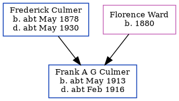

Frank A G Culmer cMay 1913 - c1916
[ Home ] | [ Calendar ] | [ Surnames Index ] | [ Errors ] | [ Family History ]The child of Frederick Culmer (a railway porter) and Florence Ward, Frank Culmer, the third cousin once-removed on the mother's side of Nigel Horne, was born in Strood, Kent, England c. May 19131.
He died in Strood c. Feb 19162.
Parents
- Frederick Percy was born c. May 1878
- Florence Ada was born in 1880
Citations
- England & Wales births 1837-2006 - Findmypast
- England & Wales deaths 1837-2007 - Findmypast
Media
England & Wales births 1837-2006 - BMD/B/1913/2/AZ/000352/132
England & Wales deaths 1837-2007 - BMD/D/1916/1/AZ/000230/022
Family Tree
Map
Generated by ged2site. Last updated on Jul 3, 2024